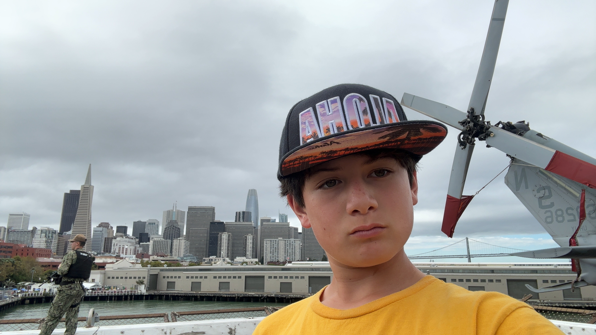
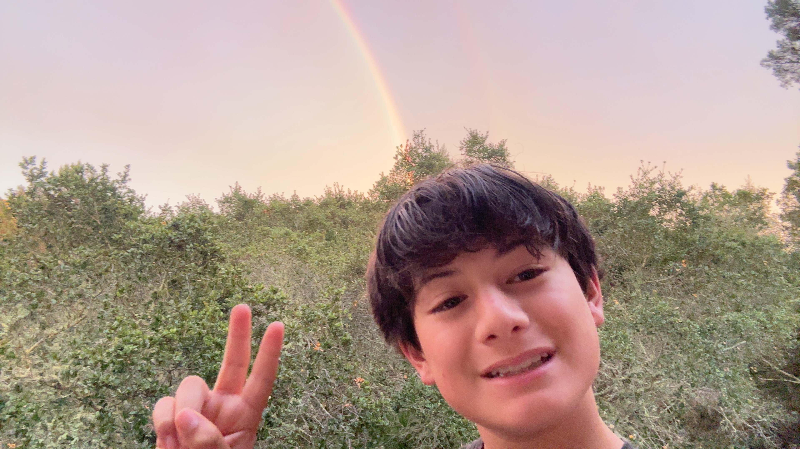
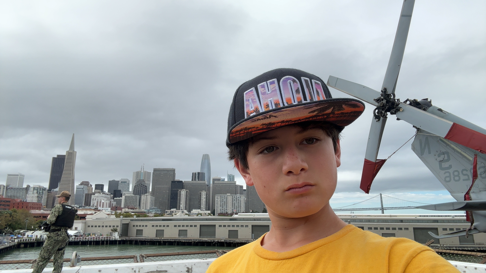
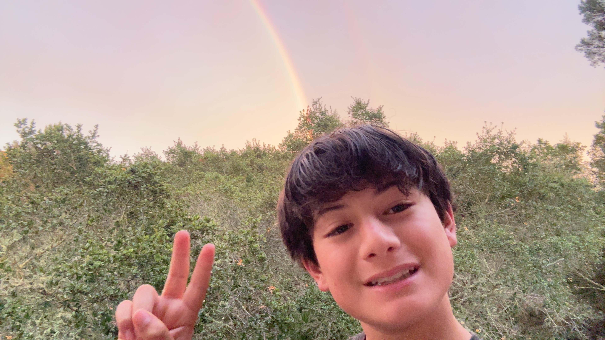
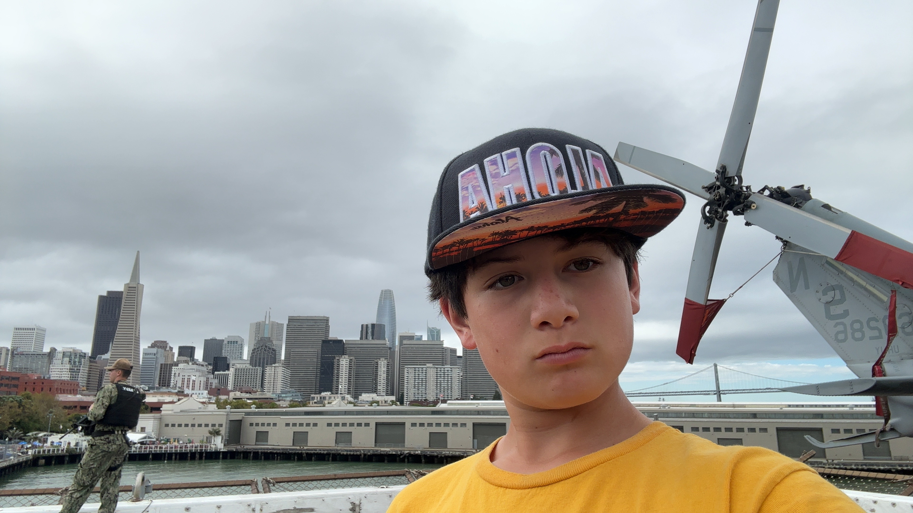
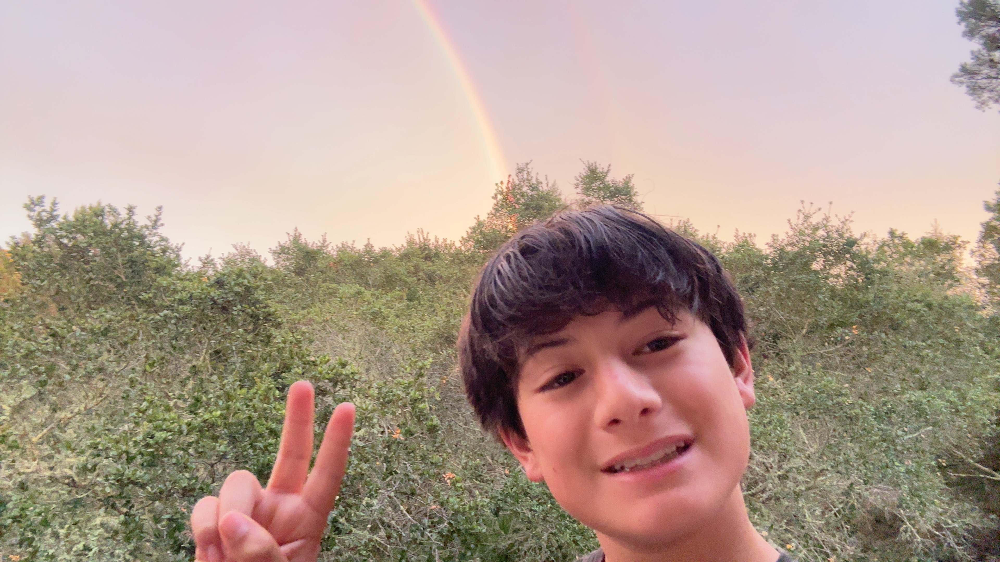

Age
12 years
April 15, 2013
San Francisco, California
Parents
Joshua Bernstein, Josette Rivera


April 15, 2013
San Francisco, California
Joshua Bernstein, Josette Rivera
Jonathan Bernstein is a beginner musician who started playing violin at age 6 after having an interest in pirates.
This interest later turned into a great achievement for him. He joined his middle school orchestra five years later, and is proud to be playing in second chair.
However, he also developed a liking for heavy metal. He especially liked bass, and began jamming along to classic metal songs.